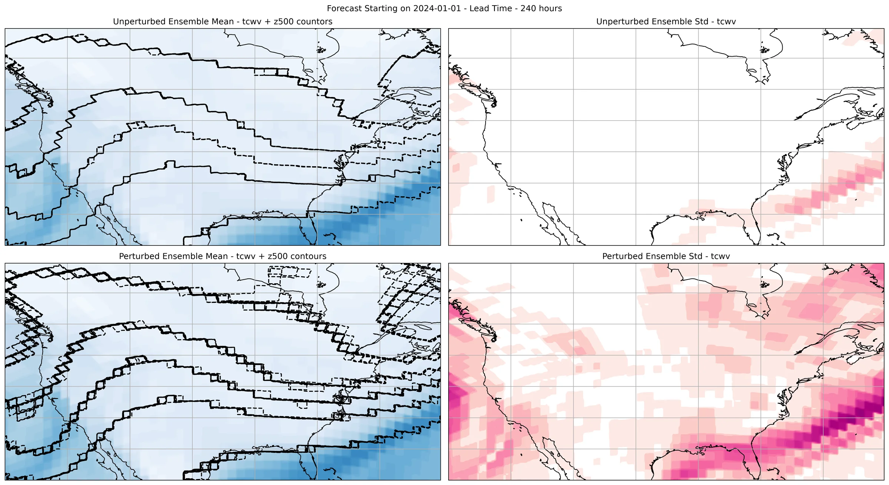
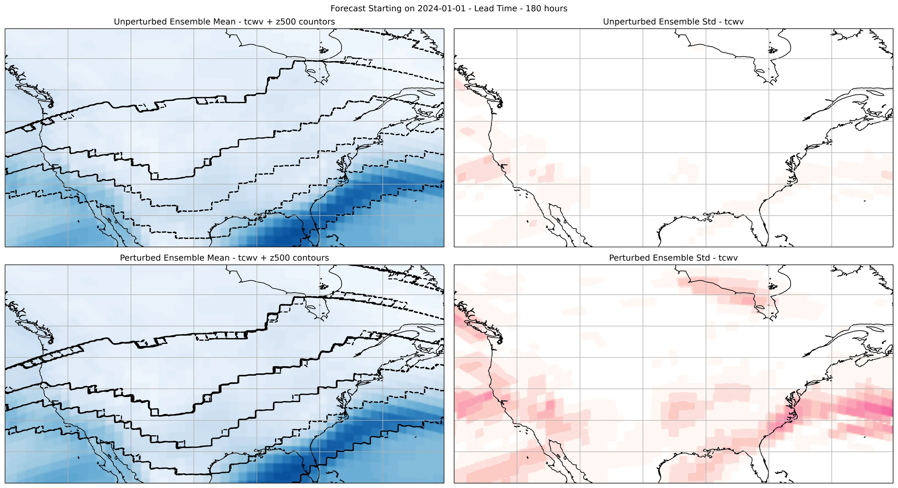
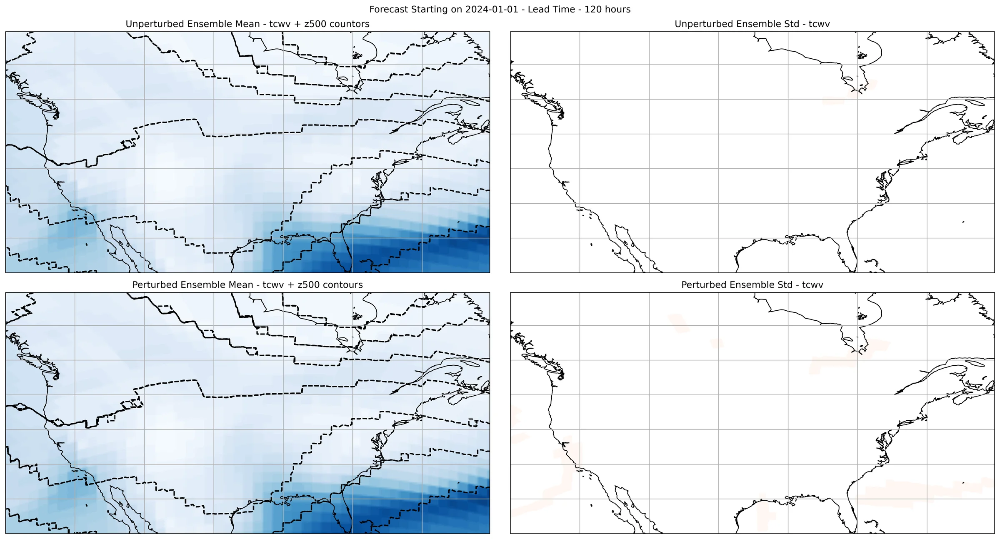
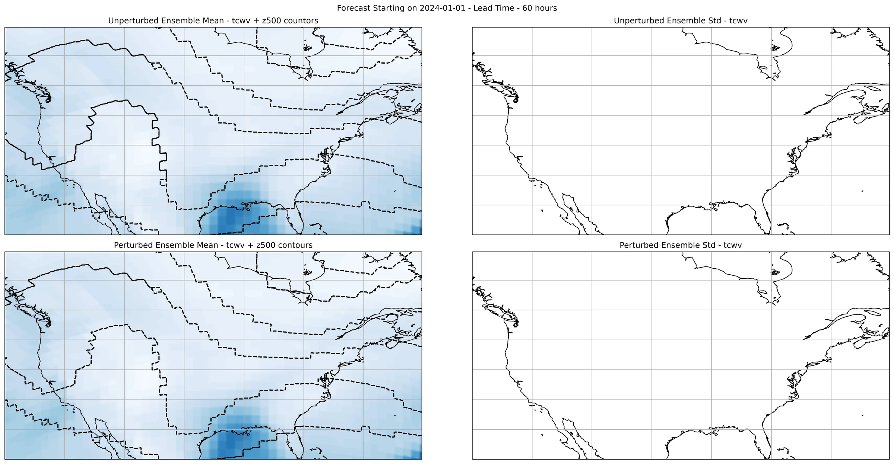

Model Hook Injection: Perturbation¶
Adding model noise by using custom hooks.
This example will demonstrate how to run an ensemble inference workflow to generate a perturbed ensemble forecast. This perturbation is done by injecting code into the model front and rear hooks. These hooks are applied to the tensor data before/after the model forward call.
This example also illustrates how you can subselect data for IO. In this example we will only output two variables: total column water vapor (tcwv) and 500 hPa geopotential (z500). To run this, make sure that the model selected predicts these variables are change appropriately.
In this example you will learn:
- How to instantiate a built in prognostic model
- Creating a data source and IO object
- Changing the model forward/rear hooks
- Choose a subselection of coordinates to save to an IO object.
- Post-processing results
Creating an Ensemble Workflow¶
To start let's begin with creating an ensemble workflow to use. We encourage
users to explore and experiment with their own custom workflows that borrow ideas from
built in workflows inside earth2studio.run or the examples.
Creating our own generalizable ensemble workflow is easy when we rely on the component interfaces defined in Earth2Studio (use dependency injection). Here we create a run method that accepts the following:
- time: Input list of datetimes / strings to run inference for
- nsteps: Number of forecast steps to predict
- nensemble: Number of ensembles to run for
- prognostic: Our initialized prognostic model
- data: Initialized data source to fetch initial conditions from
- io: io store that data is written to.
- output_coords: CoordSystem of output coordinates that should be saved. Should be a proper subset of model output coordinates.
Set Up¶
With the ensemble workflow defined, we now need to create the individual components.
We need the following:
- Prognostic Model: Use the built in DLWP model
earth2studio.models.px.DLWP. - Datasource: Pull data from the GFS data api
earth2studio.data.GFS. - IO Backend: Save the outputs into a Zarr store
earth2studio.io.ZarrBackend.
We will first run the ensemble workflow using an unmodified function, that is a model that has the default (identity) forward and rear hooks. Then we will define new hooks for the model and rerun the inference request.
import os
os.makedirs("outputs", exist_ok=True)
from dotenv import load_dotenv
load_dotenv() # TODO: make common example prep function
import numpy as np
from earth2studio.data import GFS
from earth2studio.io import ZarrBackend
from earth2studio.models.px import DLWP
from earth2studio.perturbation import Gaussian
from earth2studio.run import ensemble
# Load the default model package which downloads the check point from NGC
package = DLWP.load_default_package()
model = DLWP.load_model(package)
# Create the data source
data = GFS()
# Create the IO handler, store in memory
chunks = {"ensemble": 1, "time": 1, "lead_time": 1}
io_unperturbed = ZarrBackend(
file_name="outputs/05_ensemble.zarr",
chunks=chunks,
backend_kwargs={"overwrite": True},
)
Execute the Workflow¶
First, we will run the ensemble workflow but with a earth2studio.perturbation.Gaussian
perturbation as the control.
The workflow will return the provided IO object back to the user, which can be used to then post process. Some have additional APIs that can be handy for post-processing or saving to file. Check the API docs for more information.
nsteps = 4 * 12
nensemble = 16
batch_size = 4
forecast_date = "2024-01-01"
output_coords = {
"lat": np.arange(25.0, 60.0, 0.25),
"lon": np.arange(230.0, 300.0, 0.25),
"variable": np.array(["tcwv", "z500"]),
}
# First run with no model perturbation
io_unperturbed = ensemble(
[forecast_date],
nsteps,
nensemble,
model,
data,
io_unperturbed,
Gaussian(noise_amplitude=0.01),
output_coords=output_coords,
batch_size=batch_size,
)
Console output183 lines
2026-08-25 09:13:11.347 | INFO | earth2studio.run:ensemble:394 - Running ensemble inference!
2026-08-25 09:13:11.348 | INFO | earth2studio.run:ensemble:401 - Inference device: cuda
Fetching GFS data: 0%| | 0/7 [00:00<?, ?it/s]
Fetching GFS data: 14%|█▍ | 1/7 [00:00<00:01, 5.13it/s]
Fetching GFS data: 100%|██████████| 7/7 [00:00<00:00, 35.19it/s]
Fetching GFS data: 0%| | 0/7 [00:00<?, ?it/s]
Fetching GFS data: 14%|█▍ | 1/7 [00:00<00:01, 5.77it/s]
Fetching GFS data: 100%|██████████| 7/7 [00:00<00:00, 36.09it/s]
2026-08-25 09:13:11.971 | SUCCESS | earth2studio.run:ensemble:422 - Fetched data from GFS
2026-08-25 09:13:12.054 | INFO | earth2studio.run:ensemble:466 - Starting 16 Member Ensemble Inference with 4 number of batches.
Total Ensemble Batches: 0%| | 0/4 [00:00<?, ?it/s]
Running batch 0 inference: 0%| | 0/49 [00:00<?, ?it/s]
Running batch 0 inference: 2%|▏ | 1/49 [00:00<00:06, 7.68it/s]
Running batch 0 inference: 4%|▍ | 2/49 [00:00<00:11, 4.15it/s]
Running batch 0 inference: 10%|█ | 5/49 [00:00<00:04, 10.72it/s]
Running batch 0 inference: 16%|█▋ | 8/49 [00:00<00:02, 14.15it/s]
Running batch 0 inference: 22%|██▏ | 11/49 [00:00<00:02, 16.83it/s]
Running batch 0 inference: 27%|██▋ | 13/49 [00:00<00:02, 17.33it/s]
Running batch 0 inference: 31%|███ | 15/49 [00:01<00:01, 17.42it/s]
Running batch 0 inference: 37%|███▋ | 18/49 [00:01<00:01, 17.81it/s]
Running batch 0 inference: 41%|████ | 20/49 [00:01<00:01, 18.10it/s]
Running batch 0 inference: 47%|████▋ | 23/49 [00:01<00:01, 19.99it/s]
Running batch 0 inference: 53%|█████▎ | 26/49 [00:01<00:01, 21.40it/s]
Running batch 0 inference: 59%|█████▉ | 29/49 [00:01<00:00, 23.01it/s]
Running batch 0 inference: 65%|██████▌ | 32/49 [00:01<00:00, 23.40it/s]
Running batch 0 inference: 71%|███████▏ | 35/49 [00:01<00:00, 25.02it/s]
Running batch 0 inference: 78%|███████▊ | 38/49 [00:02<00:00, 24.02it/s]
Running batch 0 inference: 84%|████████▎ | 41/49 [00:02<00:00, 25.56it/s]
Running batch 0 inference: 90%|████████▉ | 44/49 [00:02<00:00, 25.30it/s]
Running batch 0 inference: 96%|█████████▌| 47/49 [00:02<00:00, 26.55it/s]
Total Ensemble Batches: 25%|██▌ | 1/4 [00:02<00:07, 2.47s/it]
Running batch 4 inference: 0%| | 0/49 [00:00<?, ?it/s]
Running batch 4 inference: 6%|▌ | 3/49 [00:00<00:01, 29.89it/s]
Running batch 4 inference: 12%|█▏ | 6/49 [00:00<00:01, 26.67it/s]
Running batch 4 inference: 20%|██ | 10/49 [00:00<00:01, 27.15it/s]
Running batch 4 inference: 29%|██▊ | 14/49 [00:00<00:01, 26.92it/s]
Running batch 4 inference: 35%|███▍ | 17/49 [00:00<00:01, 27.60it/s]
Running batch 4 inference: 41%|████ | 20/49 [00:00<00:01, 26.69it/s]
Running batch 4 inference: 47%|████▋ | 23/49 [00:00<00:00, 27.47it/s]
Running batch 4 inference: 53%|█████▎ | 26/49 [00:00<00:00, 26.71it/s]
Running batch 4 inference: 59%|█████▉ | 29/49 [00:01<00:00, 26.92it/s]
Running batch 4 inference: 65%|██████▌ | 32/49 [00:01<00:00, 25.56it/s]
Running batch 4 inference: 71%|███████▏ | 35/49 [00:01<00:00, 26.43it/s]
Running batch 4 inference: 78%|███████▊ | 38/49 [00:01<00:00, 24.65it/s]
Running batch 4 inference: 84%|████████▎ | 41/49 [00:01<00:00, 24.62it/s]
Running batch 4 inference: 90%|████████▉ | 44/49 [00:01<00:00, 23.27it/s]
Running batch 4 inference: 96%|█████████▌| 47/49 [00:01<00:00, 23.45it/s]
Total Ensemble Batches: 50%|█████ | 2/4 [00:04<00:04, 2.15s/it]
Running batch 8 inference: 0%| | 0/49 [00:00<?, ?it/s]
Running batch 8 inference: 6%|▌ | 3/49 [00:00<00:01, 28.77it/s]
Running batch 8 inference: 12%|█▏ | 6/49 [00:00<00:01, 22.92it/s]
Running batch 8 inference: 18%|█▊ | 9/49 [00:00<00:02, 19.98it/s]
Running batch 8 inference: 24%|██▍ | 12/49 [00:00<00:02, 17.00it/s]
Running batch 8 inference: 29%|██▊ | 14/49 [00:00<00:02, 16.41it/s]
Running batch 8 inference: 33%|███▎ | 16/49 [00:00<00:02, 16.46it/s]
Running batch 8 inference: 37%|███▋ | 18/49 [00:01<00:01, 16.71it/s]
Running batch 8 inference: 41%|████ | 20/49 [00:01<00:01, 16.67it/s]
Running batch 8 inference: 45%|████▍ | 22/49 [00:01<00:01, 17.08it/s]
Running batch 8 inference: 49%|████▉ | 24/49 [00:01<00:01, 17.72it/s]
Running batch 8 inference: 55%|█████▌ | 27/49 [00:01<00:01, 19.33it/s]
Running batch 8 inference: 59%|█████▉ | 29/49 [00:01<00:01, 19.04it/s]
Running batch 8 inference: 63%|██████▎ | 31/49 [00:01<00:00, 18.29it/s]
Running batch 8 inference: 67%|██████▋ | 33/49 [00:01<00:00, 17.50it/s]
Running batch 8 inference: 71%|███████▏ | 35/49 [00:01<00:00, 17.81it/s]
Running batch 8 inference: 78%|███████▊ | 38/49 [00:02<00:00, 18.68it/s]
Running batch 8 inference: 86%|████████▌ | 42/49 [00:02<00:00, 21.65it/s]
Running batch 8 inference: 92%|█████████▏| 45/49 [00:02<00:00, 23.56it/s]
Running batch 8 inference: 98%|█████████▊| 48/49 [00:02<00:00, 24.10it/s]
Total Ensemble Batches: 75%|███████▌ | 3/4 [00:06<00:02, 2.30s/it]
Running batch 12 inference: 0%| | 0/49 [00:00<?, ?it/s]
Running batch 12 inference: 6%|▌ | 3/49 [00:00<00:01, 29.87it/s]
Running batch 12 inference: 12%|█▏ | 6/49 [00:00<00:01, 27.40it/s]
Running batch 12 inference: 18%|█▊ | 9/49 [00:00<00:01, 27.70it/s]
Running batch 12 inference: 24%|██▍ | 12/49 [00:00<00:01, 24.70it/s]
Running batch 12 inference: 31%|███ | 15/49 [00:00<00:01, 24.35it/s]
Running batch 12 inference: 37%|███▋ | 18/49 [00:00<00:01, 22.10it/s]
Running batch 12 inference: 43%|████▎ | 21/49 [00:00<00:01, 23.55it/s]
Running batch 12 inference: 49%|████▉ | 24/49 [00:01<00:01, 22.00it/s]
Running batch 12 inference: 55%|█████▌ | 27/49 [00:01<00:01, 21.41it/s]
Running batch 12 inference: 61%|██████ | 30/49 [00:01<00:00, 22.20it/s]
Running batch 12 inference: 67%|██████▋ | 33/49 [00:01<00:00, 22.37it/s]
Running batch 12 inference: 73%|███████▎ | 36/49 [00:01<00:00, 21.07it/s]
Running batch 12 inference: 80%|███████▉ | 39/49 [00:01<00:00, 21.19it/s]
Running batch 12 inference: 86%|████████▌ | 42/49 [00:01<00:00, 20.20it/s]
Running batch 12 inference: 92%|█████████▏| 45/49 [00:02<00:00, 20.40it/s]
Running batch 12 inference: 98%|█████████▊| 48/49 [00:02<00:00, 19.52it/s]
Total Ensemble Batches: 100%|██████████| 4/4 [00:09<00:00, 2.28s/it]
Total Ensemble Batches: 100%|██████████| 4/4 [00:09<00:00, 2.28s/it]
2026-08-25 09:13:21.174 | SUCCESS | earth2studio.run:ensemble:536 -
Inference completeNow let's introduce slight model perturbation using the prognostic model hooks defined
in [earth2studio.models.px.utils.PrognosticMixin][].
Note that center.unsqueeze(-1) is DLWP specific since it operates on a cubed sphere
with grid dimensions (nface, lat, lon) instead of just (lat,lon).
To switch out the model, consider removing the unsqueeze .
model.front_hook = lambda x, coords: (
x
- 0.1
* x.var(dim=0)
* (x - model.center.unsqueeze(-1))
/ (model.scale.unsqueeze(-1)) ** 2
+ 0.1 * (x - x.mean(dim=0)),
coords,
)
# Also could use model.rear_hook = ...
io_perturbed = ZarrBackend(
file_name="outputs/05_ensemble_model_perturbation.zarr",
chunks=chunks,
backend_kwargs={"overwrite": True},
)
io_perturbed = ensemble(
[forecast_date],
nsteps,
nensemble,
model,
data,
io_perturbed,
Gaussian(noise_amplitude=0.01),
output_coords=output_coords,
batch_size=batch_size,
)
Console output175 lines
2026-08-25 09:13:21.746 | INFO | earth2studio.run:ensemble:394 - Running ensemble inference!
2026-08-25 09:13:21.746 | INFO | earth2studio.run:ensemble:401 - Inference device: cuda
Fetching GFS data: 0%| | 0/7 [00:00<?, ?it/s]
Fetching GFS data: 14%|█▍ | 1/7 [00:00<00:00, 6.53it/s]
Fetching GFS data: 100%|██████████| 7/7 [00:00<00:00, 44.89it/s]
Fetching GFS data: 0%| | 0/7 [00:00<?, ?it/s]
Fetching GFS data: 14%|█▍ | 1/7 [00:00<00:00, 7.37it/s]
Fetching GFS data: 100%|██████████| 7/7 [00:00<00:00, 50.11it/s]
2026-08-25 09:13:22.130 | SUCCESS | earth2studio.run:ensemble:422 - Fetched data from GFS
2026-08-25 09:13:22.206 | INFO | earth2studio.run:ensemble:466 - Starting 16 Member Ensemble Inference with 4 number of batches.
Total Ensemble Batches: 0%| | 0/4 [00:00<?, ?it/s]
Running batch 0 inference: 0%| | 0/49 [00:00<?, ?it/s]
Running batch 0 inference: 4%|▍ | 2/49 [00:00<00:03, 15.53it/s]
Running batch 0 inference: 10%|█ | 5/49 [00:00<00:01, 22.54it/s]
Running batch 0 inference: 16%|█▋ | 8/49 [00:00<00:01, 21.99it/s]
Running batch 0 inference: 22%|██▏ | 11/49 [00:00<00:01, 24.01it/s]
Running batch 0 inference: 29%|██▊ | 14/49 [00:00<00:01, 24.04it/s]
Running batch 0 inference: 35%|███▍ | 17/49 [00:00<00:01, 25.33it/s]
Running batch 0 inference: 41%|████ | 20/49 [00:00<00:01, 24.19it/s]
Running batch 0 inference: 47%|████▋ | 23/49 [00:00<00:01, 25.13it/s]
Running batch 0 inference: 53%|█████▎ | 26/49 [00:01<00:00, 24.10it/s]
Running batch 0 inference: 59%|█████▉ | 29/49 [00:01<00:00, 25.23it/s]
Running batch 0 inference: 65%|██████▌ | 32/49 [00:01<00:00, 24.74it/s]
Running batch 0 inference: 71%|███████▏ | 35/49 [00:01<00:00, 25.83it/s]
Running batch 0 inference: 78%|███████▊ | 38/49 [00:01<00:00, 24.98it/s]
Running batch 0 inference: 84%|████████▎ | 41/49 [00:01<00:00, 25.88it/s]
Running batch 0 inference: 90%|████████▉ | 44/49 [00:01<00:00, 25.37it/s]
Running batch 0 inference: 96%|█████████▌| 47/49 [00:01<00:00, 26.19it/s]
Total Ensemble Batches: 25%|██▌ | 1/4 [00:01<00:05, 1.98s/it]
Running batch 4 inference: 0%| | 0/49 [00:00<?, ?it/s]
Running batch 4 inference: 6%|▌ | 3/49 [00:00<00:01, 27.04it/s]
Running batch 4 inference: 12%|█▏ | 6/49 [00:00<00:01, 24.34it/s]
Running batch 4 inference: 18%|█▊ | 9/49 [00:00<00:01, 25.39it/s]
Running batch 4 inference: 24%|██▍ | 12/49 [00:00<00:01, 23.90it/s]
Running batch 4 inference: 31%|███ | 15/49 [00:00<00:01, 24.69it/s]
Running batch 4 inference: 37%|███▋ | 18/49 [00:00<00:01, 23.61it/s]
Running batch 4 inference: 43%|████▎ | 21/49 [00:00<00:01, 24.51it/s]
Running batch 4 inference: 49%|████▉ | 24/49 [00:01<00:01, 23.04it/s]
Running batch 4 inference: 55%|█████▌ | 27/49 [00:01<00:00, 24.04it/s]
Running batch 4 inference: 61%|██████ | 30/49 [00:01<00:00, 21.97it/s]
Running batch 4 inference: 67%|██████▋ | 33/49 [00:01<00:00, 22.28it/s]
Running batch 4 inference: 73%|███████▎ | 36/49 [00:01<00:00, 21.68it/s]
Running batch 4 inference: 80%|███████▉ | 39/49 [00:01<00:00, 22.39it/s]
Running batch 4 inference: 86%|████████▌ | 42/49 [00:01<00:00, 22.28it/s]
Running batch 4 inference: 92%|█████████▏| 45/49 [00:01<00:00, 23.38it/s]
Running batch 4 inference: 98%|█████████▊| 48/49 [00:02<00:00, 23.76it/s]
Total Ensemble Batches: 50%|█████ | 2/4 [00:04<00:04, 2.04s/it]
Running batch 8 inference: 0%| | 0/49 [00:00<?, ?it/s]
Running batch 8 inference: 6%|▌ | 3/49 [00:00<00:01, 29.54it/s]
Running batch 8 inference: 12%|█▏ | 6/49 [00:00<00:01, 26.63it/s]
Running batch 8 inference: 18%|█▊ | 9/49 [00:00<00:01, 27.75it/s]
Running batch 8 inference: 24%|██▍ | 12/49 [00:00<00:01, 26.28it/s]
Running batch 8 inference: 31%|███ | 15/49 [00:00<00:01, 25.76it/s]
Running batch 8 inference: 37%|███▋ | 18/49 [00:00<00:01, 25.30it/s]
Running batch 8 inference: 43%|████▎ | 21/49 [00:00<00:01, 25.45it/s]
Running batch 8 inference: 49%|████▉ | 24/49 [00:00<00:01, 24.83it/s]
Running batch 8 inference: 55%|█████▌ | 27/49 [00:01<00:00, 24.71it/s]
Running batch 8 inference: 61%|██████ | 30/49 [00:01<00:00, 23.24it/s]
Running batch 8 inference: 67%|██████▋ | 33/49 [00:01<00:00, 24.12it/s]
Running batch 8 inference: 73%|███████▎ | 36/49 [00:01<00:00, 23.09it/s]
Running batch 8 inference: 80%|███████▉ | 39/49 [00:01<00:00, 23.15it/s]
Running batch 8 inference: 86%|████████▌ | 42/49 [00:01<00:00, 22.79it/s]
Running batch 8 inference: 92%|█████████▏| 45/49 [00:01<00:00, 23.62it/s]
Running batch 8 inference: 98%|█████████▊| 48/49 [00:01<00:00, 23.30it/s]
Total Ensemble Batches: 75%|███████▌ | 3/4 [00:06<00:02, 2.02s/it]
Running batch 12 inference: 0%| | 0/49 [00:00<?, ?it/s]
Running batch 12 inference: 6%|▌ | 3/49 [00:00<00:01, 27.64it/s]
Running batch 12 inference: 12%|█▏ | 6/49 [00:00<00:01, 23.48it/s]
Running batch 12 inference: 18%|█▊ | 9/49 [00:00<00:01, 22.69it/s]
Running batch 12 inference: 24%|██▍ | 12/49 [00:00<00:01, 23.67it/s]
Running batch 12 inference: 31%|███ | 15/49 [00:00<00:01, 25.10it/s]
Running batch 12 inference: 37%|███▋ | 18/49 [00:00<00:01, 23.72it/s]
Running batch 12 inference: 43%|████▎ | 21/49 [00:00<00:01, 24.64it/s]
Running batch 12 inference: 49%|████▉ | 24/49 [00:00<00:01, 24.04it/s]
Running batch 12 inference: 55%|█████▌ | 27/49 [00:01<00:00, 24.29it/s]
Running batch 12 inference: 61%|██████ | 30/49 [00:01<00:00, 24.24it/s]
Running batch 12 inference: 67%|██████▋ | 33/49 [00:01<00:00, 25.31it/s]
Running batch 12 inference: 73%|███████▎ | 36/49 [00:01<00:00, 25.02it/s]
Running batch 12 inference: 80%|███████▉ | 39/49 [00:01<00:00, 25.88it/s]
Running batch 12 inference: 86%|████████▌ | 42/49 [00:01<00:00, 23.81it/s]
Running batch 12 inference: 92%|█████████▏| 45/49 [00:01<00:00, 24.43it/s]
Running batch 12 inference: 98%|█████████▊| 48/49 [00:01<00:00, 23.26it/s]
Total Ensemble Batches: 100%|██████████| 4/4 [00:08<00:00, 2.02s/it]
Total Ensemble Batches: 100%|██████████| 4/4 [00:08<00:00, 2.02s/it]
2026-08-25 09:13:30.286 | SUCCESS | earth2studio.run:ensemble:536 -
Inference completePost Processing¶
The last step is to post process our results. Here we plot and compare the ensemble mean and standard deviation from using an unperturbed/perturbed model.
Notice that the Zarr IO function has additional APIs to interact with the stored data.
import cartopy.crs as ccrs
import matplotlib.pyplot as plt
from matplotlib.colors import LogNorm
levels_unperturbed = np.linspace(0, io_unperturbed["tcwv"][:].max())
levels_perturbed = np.linspace(0, io_perturbed["tcwv"][:].max())
std_levels_perturbed = np.linspace(0, io_perturbed["tcwv"][:].std(axis=0).max())
plt.close("all")
fig = plt.figure(figsize=(20, 10), tight_layout=True)
ax0 = fig.add_subplot(2, 2, 1, projection=ccrs.PlateCarree())
ax1 = fig.add_subplot(2, 2, 2, projection=ccrs.PlateCarree())
ax2 = fig.add_subplot(2, 2, 3, projection=ccrs.PlateCarree())
ax3 = fig.add_subplot(2, 2, 4, projection=ccrs.PlateCarree())
def update(frame):
"""This function updates the frame with a new lead time for animation."""
import warnings
warnings.filterwarnings("ignore")
ax0.clear()
ax1.clear()
ax2.clear()
ax3.clear()
## Update unperturbed image
im0 = ax0.contourf(
io_unperturbed["lon"][:],
io_unperturbed["lat"][:],
io_unperturbed["tcwv"][:, 0, frame].mean(axis=0),
transform=ccrs.PlateCarree(),
cmap="Blues",
levels=levels_unperturbed,
)
ax0.coastlines()
ax0.gridlines()
im1 = ax1.contourf(
io_unperturbed["lon"][:],
io_unperturbed["lat"][:],
io_unperturbed["tcwv"][:, 0, frame].std(axis=0),
transform=ccrs.PlateCarree(),
cmap="RdPu",
levels=std_levels_perturbed,
norm=LogNorm(vmin=1e-1, vmax=std_levels_perturbed[-1]),
)
ax1.coastlines()
ax1.gridlines()
im2 = ax2.contourf(
io_perturbed["lon"][:],
io_perturbed["lat"][:],
io_perturbed["tcwv"][:, 0, frame].mean(axis=0),
transform=ccrs.PlateCarree(),
cmap="Blues",
levels=levels_perturbed,
)
ax2.coastlines()
ax2.gridlines()
im3 = ax3.contourf(
io_perturbed["lon"][:],
io_perturbed["lat"][:],
io_perturbed["tcwv"][:, 0, frame].std(axis=0),
transform=ccrs.PlateCarree(),
cmap="RdPu",
levels=std_levels_perturbed,
norm=LogNorm(vmin=1e-1, vmax=std_levels_perturbed[-1]),
)
ax3.coastlines()
ax3.gridlines()
for i in range(16):
ax0.contour(
io_unperturbed["lon"][:],
io_unperturbed["lat"][:],
io_unperturbed["z500"][i, 0, frame] / 100.0,
transform=ccrs.PlateCarree(),
levels=np.arange(485, 580, 15),
colors="black",
linestyle="dashed",
)
ax2.contour(
io_perturbed["lon"][:],
io_perturbed["lat"][:],
io_perturbed["z500"][i, 0, frame] / 100.0,
transform=ccrs.PlateCarree(),
levels=np.arange(485, 580, 15),
colors="black",
linestyle="dashed",
)
plt.suptitle(
f'Forecast Starting on {forecast_date} - Lead Time - {io_perturbed["lead_time"][frame]}'
)
ax0.set_title("Unperturbed Ensemble Mean - tcwv + z500 countors")
ax1.set_title("Unperturbed Ensemble Std - tcwv")
ax2.set_title("Perturbed Ensemble Mean - tcwv + z500 contours")
ax3.set_title("Perturbed Ensemble Std - tcwv")
if frame == 0:
plt.colorbar(
im0, ax=ax0, shrink=0.75, pad=0.04, label="kg m^-2", format="%2.1f"
)
plt.colorbar(
im1, ax=ax1, shrink=0.75, pad=0.04, label="kg m^-2", format="%1.2e"
)
plt.colorbar(
im2, ax=ax2, shrink=0.75, pad=0.04, label="kg m^-2", format="%2.1f"
)
plt.colorbar(
im3, ax=ax3, shrink=0.75, pad=0.04, label="kg m^-2", format="%1.2e"
)
# Uncomment this for animation
# import matplotlib.animation as animation
# update(0)
# ani = animation.FuncAnimation(
# fig=fig, func=update, frames=range(1, nsteps), cache_frame_data=False
# )
# ani.save(f"outputs/05_model_perturbation_{forecast_date}.gif", dpi=300)
for lt in [10, 20, 30, 40]:
update(lt)
plt.savefig(
f"outputs/05_model_perturbation_{forecast_date}_leadtime_{lt}.png",
dpi=300,
bbox_inches="tight",
)



